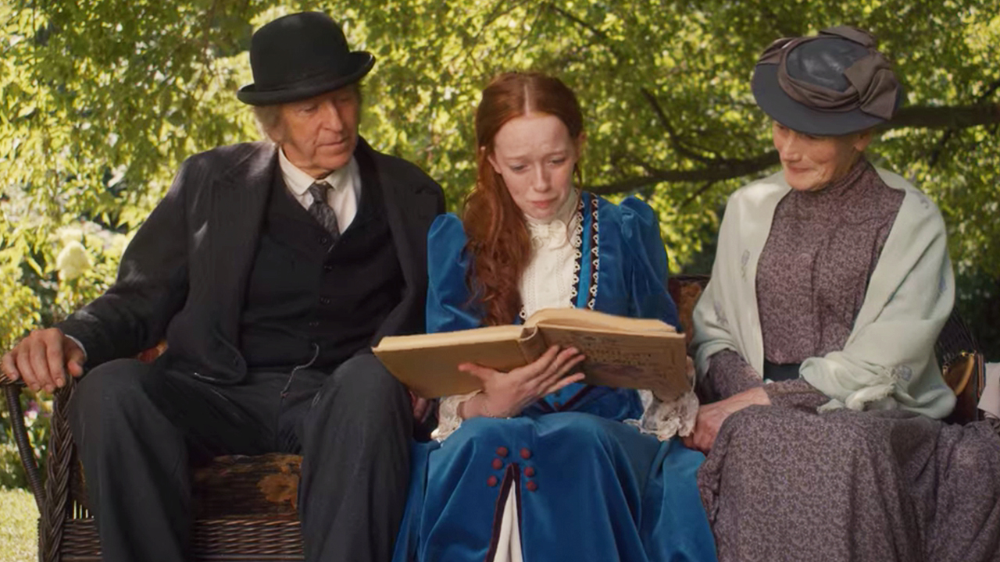
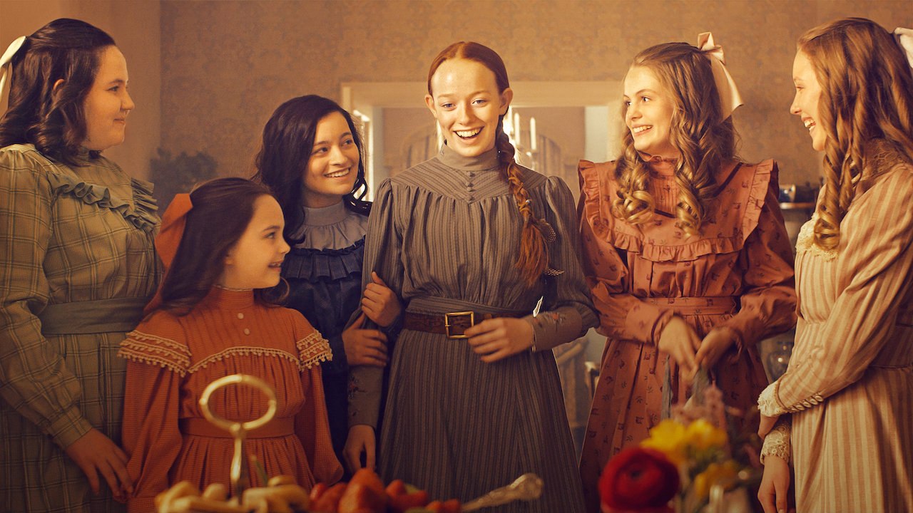
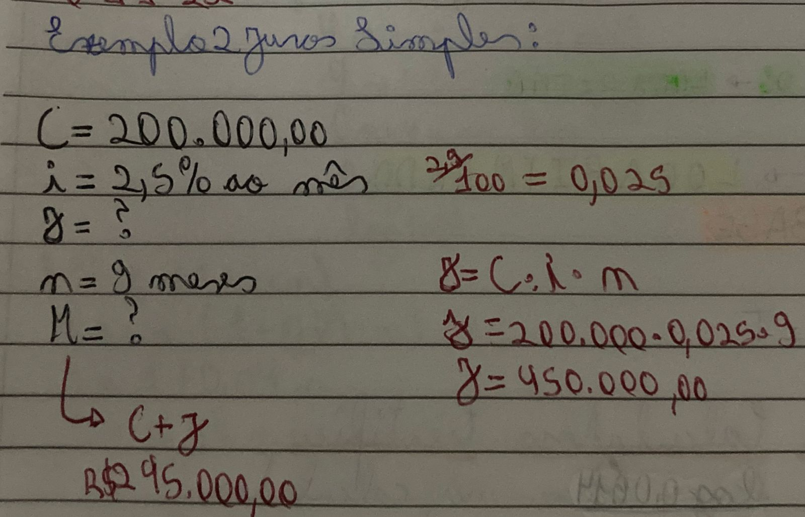

Matemática Financeira - Juros Simples

Anne, Marilla e Matthew lendo sobre os pais biológicos da Anne.
"Deve ser difícil perder a pessoa que você ama. Numa fração de segundos a pessoa vai embora. E não há nada que
você possa fazer para mudar isso e trazê-la de volta." - Anne Shirley Cuthbert
O que é Matemática Financeira?
É a matemática que visa explicar a economia e as finanças.

Anne e suas amigas em um chá da tarde.
"É muito bom ler histórias tristes e se imaginar passando por elas heroicamente, mas.. não é fácil se está
triste, não?" - Anne Shirley Cuthbert
O que é Juros Simples?
É uma taxa aplicada sempre ao capital inicial por um período de tempo numa taxa linear.
Conceitos:
- Capital Inicial(C): É o valor no qual será aplicados os juros;
- Prazo(n): É o período de tempo no qual está em uso o dinheiro do capital inicial;
- Juro(J): É o preço pago pelo empréstimo;
- Taxa de Juros(i): É o juro pago durante um período de tempo;
- Montante(M): É o valor total a ser pago no final;
- Fórmula: J=C.i.n e M=C(1+i.n).
Exemplo: Uma pessoa tomou emprestado R$ 200.000,00, a uma taxa de
juros simples de 2,5% ao mês, a ser restituído em 9 meses. Calcule o valor
dos juros e o valor futuro da restituição.

cottage